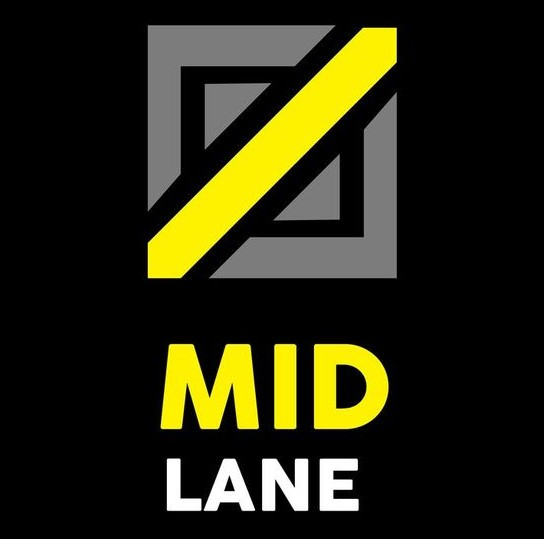
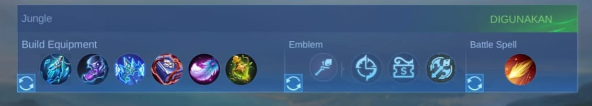

Tutorial Zilong Magic Update Terbaru
Dijamin Winstreak !!!
Penasaran Dengan cara Main Zilong Magic di Patch baru ini begini tutorial lengkapnya !
OLEH DHAFID WAHYU KUSUMO 18 SEPTEMBER 2024

Zilong Merupakan Hero Yang Sangat Sampah Di Patch Ini , dengan ban rate 0,61% dengan win rate 47,43% dan 0,61% pick rate menurut mobilelegends.com.
Hero Ini Menjadi Hero Sampah Karena Harus Menunggu Lategame = "Tunggu Late Gem Dek" Kata Usernya tetapi dengan inspire hero ini mampu untuk menang laning melawan hero fighter yang sok sokan meta itu (sampah) Duel di Exp Lane Menjadi Tantangan Bagi User Zilong
Tebak Sendiri lek Role nya
ROLE ZILONG
Ya Benar Zilong itu MidLane Hahahaha
EMBLEM,BUILD,SPELL ZILONG
Berikut adalah build , Emblem , Spell yang Adriyan rekomendasikan untuk ZILONG
Nah Segitu Saja Tutorialnya ingat Bermain Zilong Harus Perhitungan Kapan Untuk mengaktifkan ultimate , Gunakan ultimu untuk kabur dari kejaran martis yang sedang maniac ingat lebih baik kalah daripada membiarkan musuh sepeg wahai kaum lumba
Main aja brawl di mid lane sampai late paling seminggu kedepan akunmu juga ke ban
Silahkan Coba Tutorial Kami Di Rank, Salam Winstreak, Semoga Beruntung.